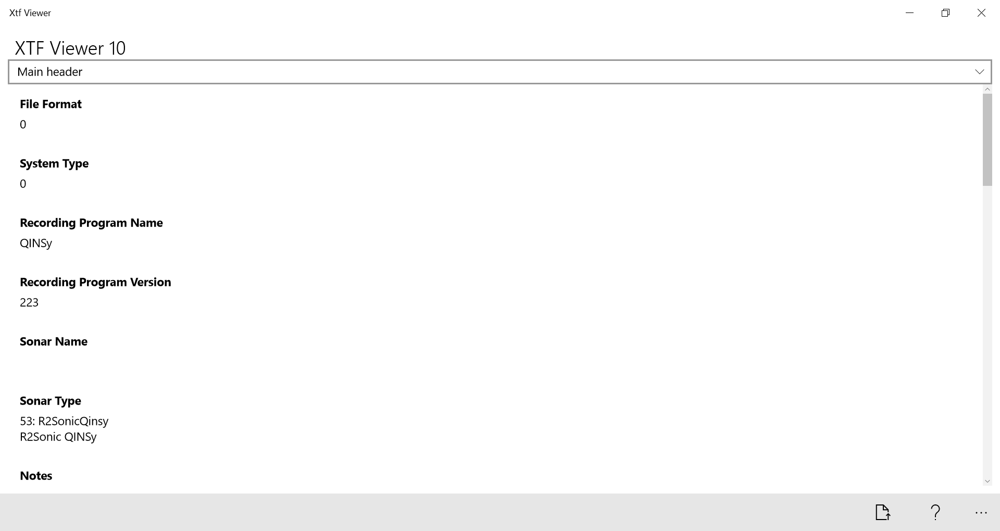
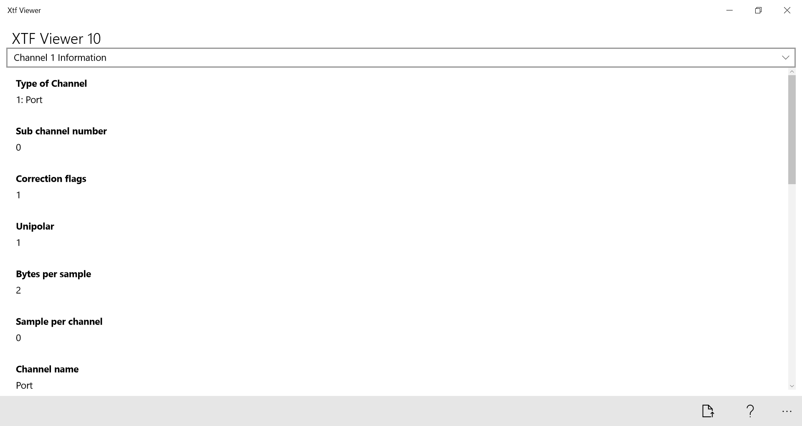
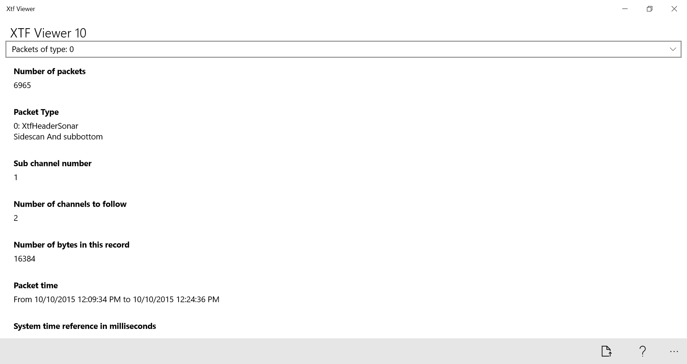

Xtf Viewer for Windows 10 Universal
Xtf Viewer for Windows 10 Universal
A Windows application that can read the files created by some geophisics acquisition softwares.
This software can visualize the information stored inside the eXtensible Triton Format files.
This version contain:
- General information about the file content.
 - Information on the content of each channel.
 - Information about each type of packet contained in the file.

The latest working release can be downloaded at the following links: